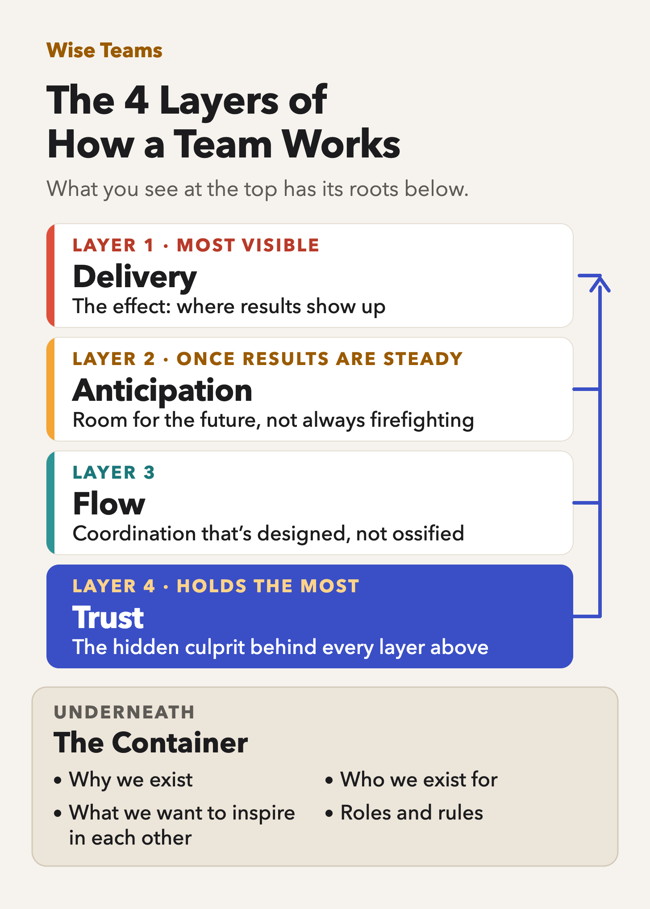
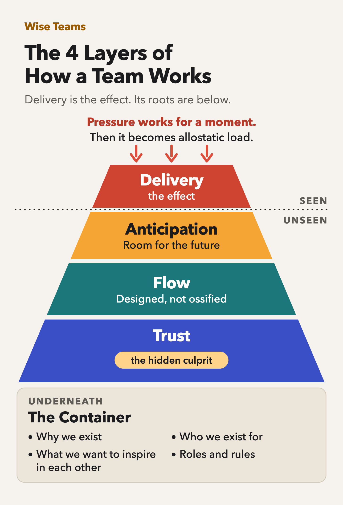
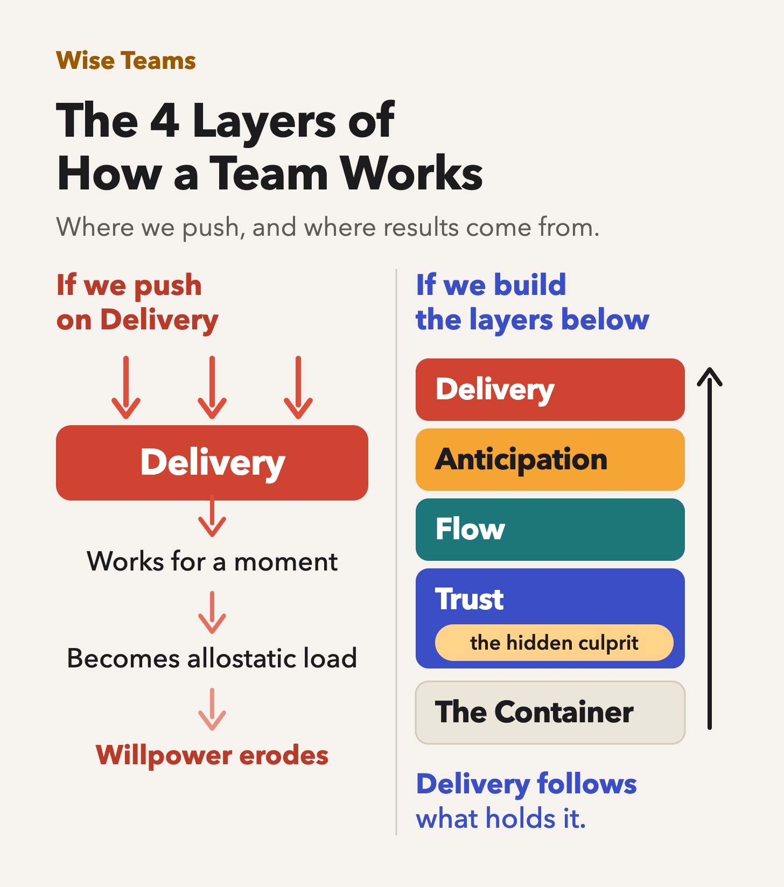

Aceleași trei variante, acum în limbajul vizual Wise Teams: fundal crem, titluri bold, etichete mici cu litere spațiate și culoarea fiecărei capabilități (Delivery coral, Anticipation portocaliu, Flow teal, Trust indigo). Frazele vin din articolul v4, iar Containerul are formularea lui Alex.
Patru carduri cu bara culorii. Trust e singurul plin: ține cel mai mult, iar linia indigo arată că atinge fiecare nivel de deasupra. Eticheta de la Anticipation spune discret de ce stă sub Delivery: „once results are steady”. Cea mai clară ca hartă, pentru locul schiței din articol.

Piramida în cele patru culori: doar Delivery e deasupra liniei, restul „unseen” și tot mai lat. Presiunea apasă pe vârf și devine allostatic load. Cea mai vie ca imagine; spune și modelul, și ideea centrală.

Mecanismul de la Layer 1: dacă apeși pe Delivery (merge pe moment, allostatic load, voința se erodează) sau dacă construiești nivelurile de dedesubt (Delivery urmează). Bună ca a doua imagine, la secțiunea Delivery.

A · etichetele ≈ 10 px (ca în rapoartele Wise), frazele ≈ 11 px
B · numele ≈ 17 px, frazele ≈ 11 px
C · textul cel mai mare dintre cele trei (≈ 13 px)
schita-4-layers-v2/gen.mjs (textele și culorile într-un singur loc). Cu node gen.mjs refaci SVG-urile.